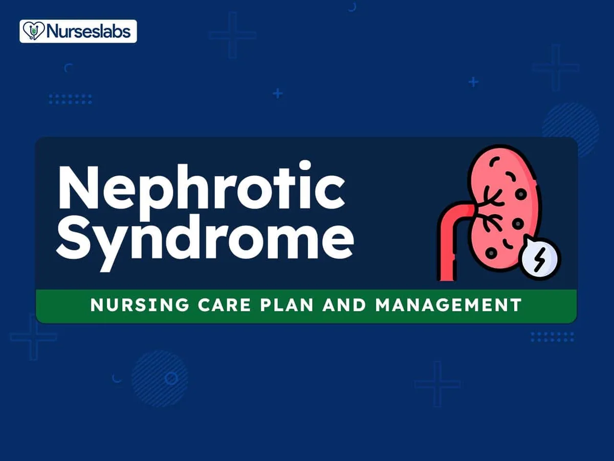

Expanded Nursing Uganda Explanation
Nephrotic Syndrome. should be understood beyond a short definition. Link the concept to patient history, focused assessment, common risks, nursing priorities, documentation and evaluation of outcomes.
01 Overview
NEPHROTIC SYNDROME.
Nephrotic syndrome , or nephrosis , is a constellation of symptoms characterized by nephrotic range, massive proteinuria, edema, and hypoalbuminemia with or without hyperlipidemia.
MASSIVE Proteinuria > 3.5g/24 hours Or spot urine protein: creatinine ratio >300 – 350 mg/mmol Hypoalbuminemia <25g/L,
Edema ,( Generalized edema is called Anasarca )
And often: Hyperlipidemia/dyslipidemia (total cholesterol >10 mmol/L)
Additionally, the loss of immunoglobulins increases the risk of infection, while the loss of proteins that prevent clot formation puts patients at risk for blood clots.
02 Pathophysiology of Nephrotic Syndrome.
Nephrotic syndrome results from damage to the kidney’s glomeruli , the tiny blood vessels that filter waste and excess water from the blood and send them to the bladder as urine.
Damage to the glomeruli from diabetes or even prolonged hypertension causes the membrane to become porous , so that small proteins such as albumin pass through the kidneys into urine.
- Glomerular Filtration Barrier Disruption: The renal glomerulus, responsible for filtering blood entering the kidney, consists of capillaries with small pores. In nephrotic syndrome, inflammation or hyalinization affects the glomeruli, allowing proteins, including albumin, antithrombin, and immunoglobulins, to pass through the normally restrictive cell membrane.
- Proteinuria: Increased permeability results in the leakage of proteins into the urine. Albumin, a key protein for maintaining oncotic pressure in the blood, is lost in significant amounts.
- Hypoalbuminemia: Loss of albumin in the urine reduces the oncotic pressure in the blood. Reduced oncotic pressure leads to the accumulation of fluid in the interstitial tissues, causing edema.
- Hyperlipidemia: Hypoalbuminemia triggers compensatory mechanisms in the liver. The liver increases the synthesis of proteins such as alpha-2 macroglobulin and lipoproteins. Elevated lipoprotein levels contribute to hyperlipidemia associated with nephrotic syndrome.
03 Signs and symptoms
Manifestation of glomerular disease, characterized by nephrotic range proteinuria and a triad of clinical findings associated with large urinary losses of protein : hypoalbuminaemia , edema and hyperlipidemia
Weight Gain: Patients experience noticeable weight gain due to fluid retention . The retention of fluids, primarily as a result of massive proteinuria and reduced oncotic pressure, leads to increased body weight.
Facial Edema (Puffiness Around the Eyes): Swelling, particularly around the eyes, with a distinctive pattern. Generalized edema is called Anarsaca.
- Morning Onset : The puffiness is most apparent in the morning and tends to subside throughout the day.
- Location : Predominantly observed around the eyes.
Abdominal Swelling: Enlargement of the abdominal region. Associated with;
- Pleural Effusion : Accumulation of fluid in the pleural cavity.
- Labial or Scrotal Swelling : Swelling in the genital areas.
Edema of Intestinal Mucosa : Swelling of the intestinal mucosa leading to various gastrointestinal symptoms. Such as
- Diarrhea : Resulting from edema affecting the intestinal lining.
- Anorexia : Loss of appetite due to abdominal discomfort.
- Poor Intestinal Absorption : Impaired absorption of nutrients, contributing to malnutrition.
Ankle/Leg Swelling : Edema affecting the lower extremities. Fluid accumulation in the ankles and legs due to altered fluid balance.
Behavioral Changes : Altered mood and behavior. Manifested as;
- Irritability : Restlessness or frustration.
- Easily Fatigued : Fatigue occurs more quickly than expected.
- Lethargy : Persistent tiredness, indicating overall weakness.
Susceptibility to Infection: Increased vulnerability to infections. Loss of immunoglobulins in the urine, combined with potential immune system suppression from treatments like corticosteroids, increases the risk of infections.
Urine Alterations : Changes in urine characteristics. Such as;
- Decreased Volume : Reduced urine output.
- Frothy Urine : Presence of foam or bubbles in the urine, indicating significant proteinuria.
- Lipiduria (lipids in urine) can also occur, but is not essential for the diagnosis of nephrotic syndrome. Hyponatremia also occurs with a low fractional sodium excretion.
Hyperlipidaemia : Hypoproteinemia stimulates protein synthesis in the liver, resulting in the overproduction of lipoproteins.
Anaemia (iron resistant microcytic hypochromic type) may be present due to transferrin loss.
Dyspnea may be present due to pleural effusion or due to diaphragmatic compression with ascites.
Other features : May have features of the underlying cause, such as the rash associated with systemic lupus erythematosus, or the neuropathy associated with diabetes.
04 Causes of Nephrotic Syndrome
Nephrotic syndrome has many causes and may either be the result of a glomerular disease that can be either limited to the kidney, called primary nephrotic syndrome (primary glomerulonephrosis), or a condition that affects the kidney and other parts of the body, called secondary nephrotic syndrome and other genetic causes.
Primary causes
- Minimal change disease (MCD): is the most common cause of nephrotic syndrome in children. It owes its name to the fact that the nephrons appear normal when viewed with an optical microscope as the lesions are only visible using an electron microscope. Another symptom is a pronounced proteinuria.
- Focal segmental glomerulosclerosis (FSGS): is the most common cause of nephrotic syndrome in adults. It is characterized by the appearance of tissue scarring in the glomeruli. The term focal is used as some of the glomeruli have scars, while others appear intact; the term segmental refers to the fact that only part of the glomerulus suffers the damage.
- Membranous glomerulonephritis (MGN): The inflammation of the glomerular membrane causes increased leaking in the kidney. It is not clear why this condition develops in most people, although an auto-immune mechanism is suspected.
- Membranoproliferative glomerulonephritis (MPGN): is the inflammation of the glomeruli along with the deposit of antibodies in their membranes, which makes filtration difficult.
- Rapidly progressive glomerulonephritis (RPGN): (Usually presents as a nephritic syndrome) A patient’s glomeruli are present in a crescent moon shape. It is characterized clinically by a rapid decrease in the glomerular filtration rate (GFR) by at least 50% over a short period, usually from a few days to 3 months.
Secondary causes
- Diabetic nephropathy : is a complication that occurs in some diabetics. Excess blood sugar accumulates in the kidney causing them to become inflamed and unable to carry out their normal function. This leads to the leakage of proteins into the urine.
- Systemic lupus erythematosus : this autoimmune disease can affect a number of organs, among them the kidney, due to the deposit of immune complexes that are typical to this disease. The disease can also cause lupus nephritis.
- Infections like; Syphilis: Kidney damage can occur during the secondary stage of this disease (between 2 and 8 weeks from onset). Hepatitis B: certain antigens present during hepatitis can accumulate in the kidneys and damage them. HIV: the virus’s antigens provoke an obstruction in the glomerular capillary’s lumen that alters normal kidney function.
- Vasculitis : inflammation of the blood vessels at a glomerular level impedes the normal blood flow and damages the kidney.
- Cancer : as happens in myeloma, the invasion of the glomeruli by cancerous cells disturbs their normal functioning.
- Genetic disorders : congenital nephrotic syndrome is a rare genetic disorder in which the protein nephrin, a component of the glomerular filtration barrier, is altered.
- Drugs ( e.g. gold salts, penicillin, captopril): gold salts can cause a more or less important loss of proteins in urine as a consequence of metal accumulation. Penicillin is nephrotoxic in patients with kidney failure and captopril can aggravate proteinuria.
05 Diagnosis and Investigations
Initial Assessment:
- Obtain a thorough medical history, including any acute or chronic conditions, family history of kidney disease, and a review of systems to identify symptoms such as edema, fatigue, and foamy urine.
- Perform a physical examination focusing on signs of fluid overload, such as edema and ascites, as well as other systemic findings.
Laboratory Investigations:
- Conduct urinalysis to detect the features of nephrotic syndrome: high levels of proteinuria.
- Microscopic hematuria that may occasionally be present.
- Biochemical tests to evaluate kidney function, including serum creatinine, blood urea nitrogen (BUN), electrolytes, albumin levels, and a lipid profile, as hyperlipidemia is often associated with nephrotic syndrome.
- Perform a urine protein-to-creatinine ratio to quantify the degree of proteinuria.
Imaging Studies:
- Ultrasound imaging: the kidneys may appear hyperechoic with a loss of corticomedullary differentiation.
- If indicated, conduct an ultrasound of the entire abdomen to evaluate for complications such as venous thrombosis or to rule out other causes of proteinuria.
Immunological and Serological Testing:
- Analyze auto-immune markers, including antinuclear antibodies (ANA), anti-streptolysin O titers (ASOT), complement components (such as C3), cryoglobulins, and perform serum electrophoresis to detect monoclonal gammopathy.
Kidney Biopsy:
- If the initial tests are inconclusive or if it is important to determine the specific cause of nephrotic syndrome, Carry out a kidney biopsy. Histological examination can identify the type of glomerulonephritis or other glomerular pathology.
Additional Investigations:
- Consider genetic testing if there is a suspicion of hereditary causes of nephrotic syndrome, especially in pediatric cases or when there is a family history of kidney disease.
- Assess for secondary causes of nephrotic syndrome, which may include tests for infectious diseases (like hepatitis B and C, HIV), diabetes mellitus control (HbA1c), and evaluation for malignancies if clinically indicated.
06 Treatment of Nephrotic Syndrome
Aims of Management.
- To reduce edema
- To correct hypoalbuminemia
- To lower blood pressure
- To reduce proteinuria
- To prevent complications such as infection, thrombosis, and malnutrition
Medical Management:
- Diuretics : Loop diuretics, such as furosemide, are the mainstay of treatment for edema. Thiazide diuretics, such as hydrochlorothiazide, can be added if needed.
- Albumin : Albumin infusions may be necessary to correct hypoalbuminemia and reduce edema. Not used because they are expensive.
- ACE inhibitors or ARBs : ACE inhibitors, such as lisinopril, or ARBs, such as losartan, are used to lower blood pressure and reduce proteinuria.
- Corticosteroids : Prednisone is the most commonly used corticosteroid for the treatment of nephrotic syndrome. Prednisone is started at a dose of 1-2 mg/kg/day and then tapered over several weeks. Lack of response to prednisolone therapy for 4 weeks is an Indication for renal biopsy.
- Immunosuppressive drugs : Immunosuppressive drugs, such as cyclophosphamide, are used to treat patients who do not respond to corticosteroids.
- Statins : Statins, such as atorvastatin, are used to lower cholesterol levels.
- Antiplatelet agents : Antiplatelet agents, such as aspirin, are used to prevent thrombosis.
- Nutritional support : Nutritional support, including a high-protein diet, is important to prevent malnutrition.
- Vitamin D and calcium supplements : Vitamin D and calcium supplements may be necessary to prevent hypocalcemia.
- Antibiotics : Antibiotics are used to treat infections.
- Vaccinations : Vaccinations against pneumococcal pneumonia and influenza are recommended for patients with nephrotic syndrome.
07 Nursing Interventions for Nephrotic Syndrome:
Fluid Volume Excess:
- Elevate the child’s legs and feet to promote fluid drainage.
- Monitor for signs of fluid overload , such as edema, ascites, and pleural effusions.
- Restrict fluid intake as prescribed by the physician.
- Administer diuretics, such as furosemide (Lasix), as prescribed to promote fluid excretion.
- Monitor intake and output strictly and maintain accurate fluid balance charts.
- Weigh the child daily to monitor fluid status.
Ineffective Breathing Pattern:
- Assess respiratory status regularly, including oxygen saturation, respiratory rate, and effort.
- Position the child in a semi-Fowler’s position or over a table supported by pillows to improve lung expansion.
- Provide oxygen therapy , if prescribed, to maintain adequate oxygenation.
- Encourage the child to take slow, deep breaths and use relaxation techniques to reduce anxiety and improve breathing patterns.
- Administer bronchodilators , if prescribed, to improve airflow and reduce wheezing.
Risk for Infection:
- Monitor the child for signs of infection , such as fever, chills, and increased white blood cell count.
- Administer antibiotics , as prescribed, to treat or prevent infections.
- Practice strict hand hygiene and maintain aseptic technique when handling the child and performing procedures.
- Keep the child’s skin clean and dry to prevent skin infections.
- Monitor the child’s nutritional status and provide a diet rich in protein and vitamins to support the immune system.
Altered Nutrition: Less Than Body Requirements:
- Provide small, frequent meals that are high in protein and calories to meet the child’s increased nutritional needs.
- Offer a variety of foods to encourage the child to eat and prevent monotony.
- Consult with a registered dietitian to develop a personalized nutrition plan that meets the child’s individual needs and preferences.
- Supplement the child’s diet with nutritional supplements, as prescribed, to ensure adequate intake of essential nutrients.
Dietary Management of Nephrotic Syndrome:
- Provide a balanced diet with adequate protein (1.5-2 g/kg) and calories.
- Limit fat intake to less than 30% of total calories and avoid saturated fats.
- Encourage the child to follow a “ no added salt ” diet to reduce fluid retention.
- Discourage the consumption of high-sugar drinks and snacks to prevent weight gain and fluid overload.
- Monitor the child’s weight regularly and adjust the diet as needed to maintain a healthy weight.
Complications:
- Monitor for complications of nephrotic syndrome, such as ascites, pleural effusion, generalized edema, coagulation disorders, thrombosis, recurrent infections, renal failure, growth retardation, and calcium and vitamin D deficiency.
- Provide appropriate interventions and treatments for any complications that arise.
- Educate the child and family about the potential complications of nephrotic syndrome and the importance of regular follow-up care.
08 Complications of Nephrotic Syndrome:
- Thromboembolic Disorders : Caused by decreased levels of antithrombin III, a protein that inhibits blood clotting. Antithrombin III is lost in the urine due to the increased permeability of the glomerular basement membrane. This can lead to the formation of blood clots in the veins (deep vein thrombosis) or arteries (pulmonary embolism).
- Infections : Increased susceptibility to infections due to:
- Loss of immunoglobulins and other protective proteins in the urine.
- Decreased production of white blood cells.
- Impaired immune cell function.
- Common infections include pneumonia, cellulitis, and peritonitis.
- Acute Kidney Failure : Caused by a decrease in blood volume (hypovolemia) due to fluid loss into the tissues (edema). Hypovolemia leads to decreased blood flow to the kidneys, which can damage the kidneys and cause acute kidney failure.
- Pulmonary Edema : Caused by the loss of proteins from the blood plasma, which leads to a decrease in oncotic pressure. Decreased oncotic pressure allows fluid to leak out of the blood vessels into the lungs, causing pulmonary edema.
- Hypothyroidism : Caused by the loss of thyroxine-binding globulin (TBG), a protein that binds to thyroid hormone and transports it in the blood. Decreased TBG levels lead to decreased levels of free thyroid hormone, which can cause hypothyroidism.
- Vitamin D Deficiency : Caused by the loss of vitamin D-binding protein, a protein that binds to vitamin D and transports it in the blood. Decreased vitamin D-binding protein levels lead to decreased levels of free vitamin D, which can cause vitamin D deficiency.
- Hypocalcemia : Caused by the loss of 25-hydroxycholecalciferol, the storage form of vitamin D. Vitamin D is necessary for the absorption of calcium from the intestines. Decreased vitamin D levels lead to decreased calcium absorption, which can cause hypocalcemia.
- Microcytic Hypochromic Anemia: Caused by the loss of ferritin, a protein that stores iron in the body. Decreased ferritin levels lead to decreased iron stores, which can cause iron-deficiency anemia.
- Protein Malnutrition : Caused by the loss of protein in the urine, which exceeds the amount of protein that is ingested. Protein malnutrition can lead to a number of health problems, including weakness, fatigue, and impaired immune function.
- Growth Retardation : Can occur in children with nephrotic syndrome due to a number of factors, including:
- Protein malnutrition.
- Anorexia (reduced appetite).
- Steroid therapy (which can suppress growth).
- Cushing’s Syndrome : Can occur in patients with nephrotic syndrome who are treated with high doses of corticosteroids. Cushing’s syndrome is caused by the overproduction of the hormone cortisol, which can lead to a number of health problems, including weight gain, high blood pressure, and diabetes.
Related Question of Nephrotic Syndrome
1. An adult male patient has been brought to medical ward with features of nephrotic syndrome
(a) List five cardinal signs and symptoms of nephrotic syndrome
(b) Describe his management from admission up to discharge.
(c) Mention five likely complications of this condition.
SOLUTIONS
(a) NEPHROTIC SYNDROME .
Is a syndrome caused by many diseases that affect the kidney characterized by severe and prolonged loss of protein in urine especially albumen, retention of excessive salts and water, increased levels of fats.
FIVE CARDINAL SIGNS AND SYMPTOMS .
- Massive proteinuria.
- Generalized edema.
- Hyperlipidemia.
- Hypoalbuminemia.
- Hypertension.
(b) MANAGEMENT.
Aims of management
- To prevent protein loss in urine.
- To prevent and control edema.
- To prevent complications.
ACTUAL MANAGEMENT.
- Admit the patient in the medical ward male side in a warm clean bed in a well ventilated room and take the patient’s particulars such as name, age, sex, religion, status.
- General physical examination is done to rule out the degree of oedema and other medical conditions that may need immediate attention.
- Vital observations are taken such as pulse, temperature, blood pressure recorded and any abnormality detected and reported for action to be taken.
- Inform the ward doctor about the patient’s conditions and in the meantime, the following should be done.
- Position the patient in half sitting to ease and maintain breathing as the patient may present with dyspnoea due to presence of fluids in the pleural cavity.
- Weigh the patient to obtain the baseline weight and daily weighing of the patient should be done to ascertain whether edema is increasing or reducing which is evidenced by weight gain or loss.
- Monitor the fluid intake and output using a fluid balance chart to ascertain the state of the kidney.
- Encourage the patient to do deep breathing exercises to prevent lung complications such as atelectasis.
- Provide skin care particularly over edematous areas to prevent skin breakdown.
- On doctor’s arrival, he may order for the following investigations .
- Urine for culture and sensitivity to identify the causative agent.
- Urinalysis for proteinuria and specific gravity, blood for;
- Renal function test, it will show us the state of the kidney function.
- Cholesterol levels ; this will show us the level of cholesterol in blood.
- Serum albumen ; this will show us the level of protein or albumin in blood.
- The doctor may prescribe the following drugs to be administered;
- Diuretics , such as spironolactone 100-200mg o.d to reduce edema by increasing the fluid output by the kidney.
- Antihypertensives such as captopril to control the blood pressure.
- Infusion albumin 1g/kg in case of massive edema ascites and this will help to shift fluid from interstitial spaces back to the vascular system.
- Plasma blood transfusion to treat hypoalbuminemia.
- Cholesterol reducing medication to have the cholesterol levels in blood such as lovastatin.
- Anticoagulants to reduce the blood ability to clot and reduce the risk of blood clot formation e.g. Heparin.
- Immune suppressing medications are given to control the immune system such as prednisolone if the cause is autoimmune.
- Antibiotics such as ceftriaxone to treat secondary bacterial infections.
- The doctor may order for renal transplant if the chemotherapy fails.
Routine nursing care.
- Continuous urine testing is done to see whether proteinuria is reducing or increasing.
- Encourage the patient to take a deity rich in carbohydrates and vitamins but low in protein and salts.
- Ensure enough rest for the patient as this will reduce body demand for oxygen and hence prevent fatigue.
- Promote physical comfort by ensuring daily bed bath, change of position, oral care and change of bed linen.
- Reassure the patient to alleviate anxiety and hence promote healing.
- Ensure bladder and bowel care for the patient.
ADVICE ON DISCHARGE
The patient is advised on the following:
- To take a deity low in salt and protein.
- Drug compliance.
- Personal hygiene.
- Stop using drugs like heroin, NSAIDs.
- Screening and treating of diseases predisposing or causing the disease.
- To come back for review on the appointment given.
COMPLICATIONS.
- Acute kidney failure.
- Kidney necrosis.
- Ascites.
- Pyelonephritis.
- Cardiac failure
- Pulmonary embolism.
- Atherosclerosis.
- Deep venous thrombosis.
09 Nursing Uganda Clinical Lens
Use Nephrotic Syndrome as a practical nursing topic, not only a memorized definition. Start with normal structure and function, then connect it to assessment findings and disease.
- What to understand first: define nephrotic syndrome, identify the normal or expected pattern, then explain what changes when the patient is unwell.
- Why it matters in care: the nurse must recognize risk early, explain findings clearly, document accurately and know when to escalate.
- How to revise it: connect each point to assessment, nursing diagnosis or care problem, intervention, rationale and evaluation.
10 Assessment Guide
- Relevant inspection, palpation, movement, auscultation, vital signs or neurological checks.
- Normal findings, abnormal findings and what each abnormality may indicate.
- Patient history, risk factors and how the body system affects other systems.
11 Nursing Priorities, Rationales and Outcomes
- Use anatomy to explain symptoms and guide focused assessment.
- Recognize findings that need urgent escalation.
- Teach the patient using simple body-system language.
The rationale for these priorities is patient safety: nursing actions should prevent deterioration, reduce discomfort, support recovery and create clear evidence for the next caregiver.
- Expected outcome: The learner can explain normal function, identify abnormal signs and connect them to nursing action.
12 Patient Teaching and Revision Check
- Explain nephrotic syndrome in simple language the patient or caregiver can repeat back.
- Teach warning signs, medicine or follow-up instructions, hygiene or lifestyle points where relevant.
- For exams, prepare a short answer using: definition, causes or risk factors, signs, assessment, management, complications and prevention.
- For ward practice, document baseline findings, actions taken, patient response and the plan for review.
Illustrations and Diagrams (1)

Related Video Lectures
Watch nursing lecture videos on YouTube for this topic. Opens in a new tab.
Watch on YouTubeExternal link: YouTube may use its own cookies and terms. Nursing Uganda is not affiliated with YouTube.